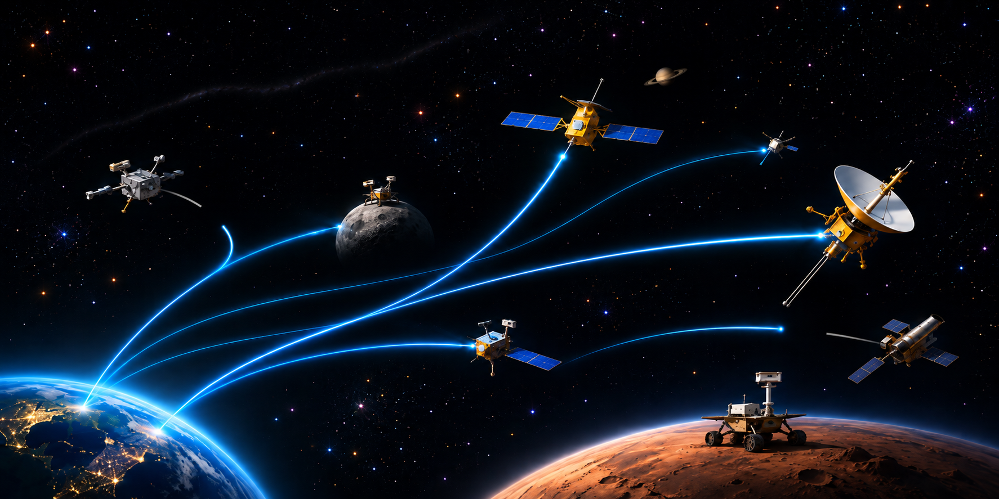

INDEPENDENT RESEARCH & ANALYSIS
RapasAI Lab investigates questions and topics of interest from multiple perspectives using publicly available information.
This English site will present selected research for readers outside Japan.
Featured Research
SPECIAL FEATURE
Voyager and the Deep Space Network
A research series tracing how the Deep Space Network has supported deep-space exploration—from communication with Voyager to the history, technology, infrastructure, and future of space communications.
Voyager and the Deep Space Network 2 articles

SPECIAL FEATURE · INTRODUCTION
Voyager, One Light-Day Away
How the Deep Space Network Supports and Expands Space Exploration
Voyager is approaching a distance of one light-day from Earth. An introduction to the Deep Space Network, its history, technology, and future.
SPECIAL FEATURE · PART 05
Why Has the Deep Space Network Approached Its Limits?
Rebuilding the DSN in Light of Twenty Years of Management
An examination of two decades of GAO and NASA OIG audits, DSN capacity shortages, management decisions, and proposals for sustaining deep-space communications.
About RapasAI Lab
RapasAI Lab is an independent research and analysis project based in Japan. We examine technology, industry, infrastructure, and related social issues through public-source research.
The main Japanese site contains the full research library. Selected works will be published here in English.
Contact
For inquiries about research, analysis, or article production, please use the contact form.
Go to Contact →